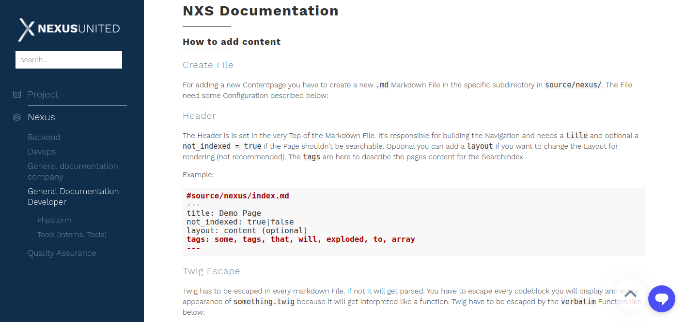
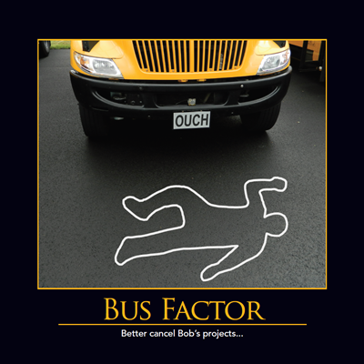
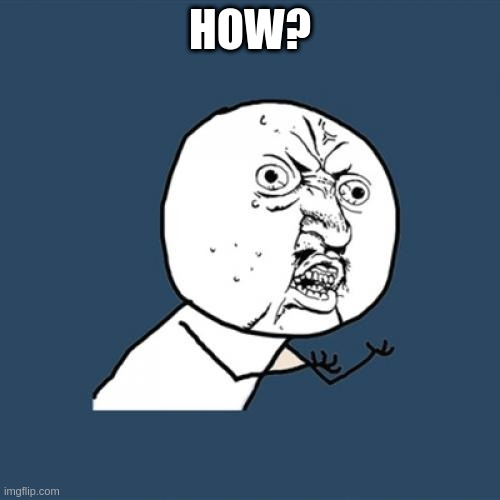
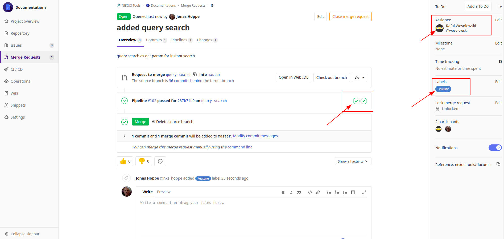
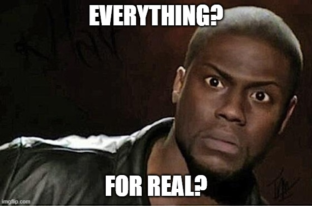
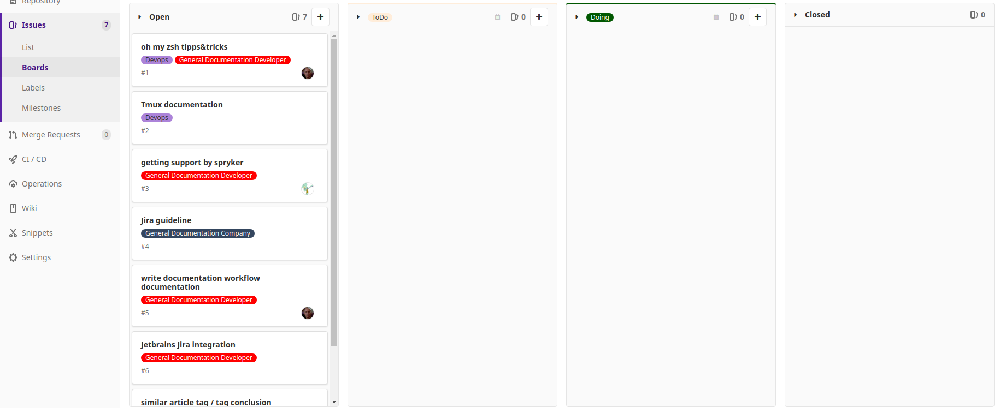
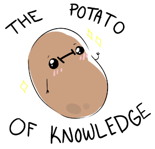

NXS Documentation
Eine Seite um sie alle zu knechten
Eine Seite um sie alle zu knechten

Warum?
- Busfaktor
- Weniger time-waste
- Friday Sessions
- Wissensvereinigung
Busfaktor

Weniger time-waste
Keine Doku
-
6 * 10 Min = 1 Stunde
- n^10min * Zukunft
vs Doku
-
1 Stunde Dokumentation schreiben
- 30sec link schicken
- NULL Time-waste
Friday Session
Wissensvereinigung
Teilwissen vereint sich zu Gesamtwissen das verteilt wird.
Wie?
Wie?

Wie?
- Markdown
- Gitlab
- Dokumentiert
Markdown
---
title: xDebug
tags: xdebug, debug
---
# xDebug for Spryker Docker
First you have to install Nexus Spryker Docker. If you haven't done this Step, please follow
[Installation Guide Spryker Docker](../install/install.md).
...
```bash
docker-php-ext-enable xdebug
vi /usr/local/etc/php/conf.d/docker-php-ext-xdebug.ini
```
...
| col 1 | col 2 |
| ------- | ------- |
|row slot |row slot |
Gitlab

Dokumentiert
Was?
Was?
- alles
- Inselwissen
- Trello
- Gitlab Issues
alles

Inselwissen
Gitlab Issues

Last but not least
